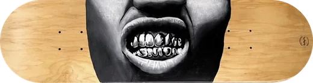
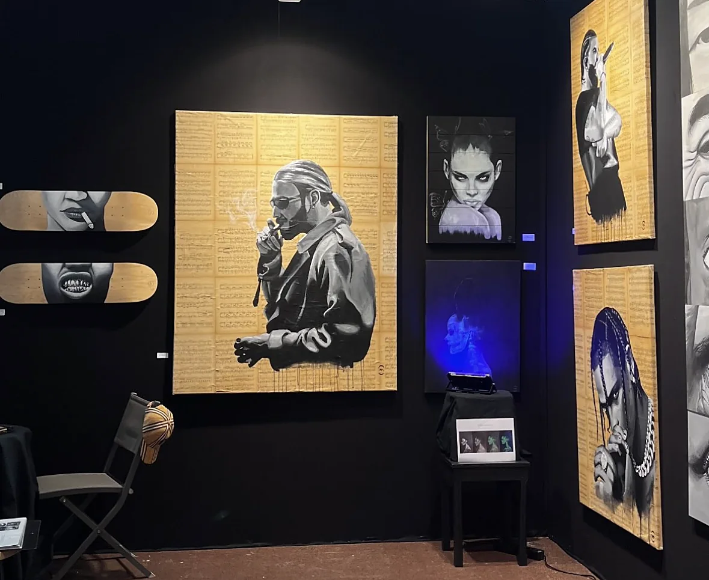

01/10 — Smoke
SVR ART — painter, France
01 — Works
Works(05)
Two series. Painted by hand. Black, white, raw wood, old scores.
01/05
Portrait on sheet music
SeriesSheet music portraits
MediumPaint over collaged scores
Paint—Boards
No.WorkSeriesMedium

02 — Studio
Studio

From the screen to the wood.
The compositions start on the computer — photographs laid onto the shape of a deck. Then everything is painted by hand, in black and white, on the raw wood.


Black walls.
Focused light.
Exhibition view — 2025.12
Log
- 2024.08StudioPaint-Boards drafted on screen, then painted by hand.
- 2025.12ExhibitionBlack walls: Paint-Boards, sheet-music portraits, canvases.
- NextYou?Commissions, exhibitions, collaborations — booking.
03 — Booking
Booking
Commissions · Exhibitions · Collabs
Write on Instagram DM @svr__art